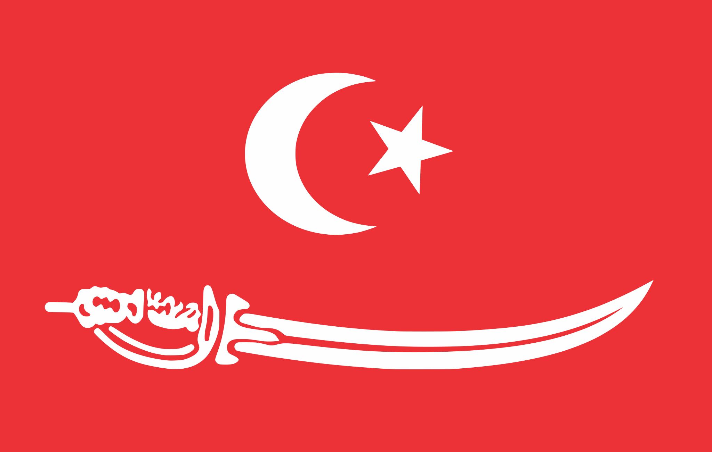
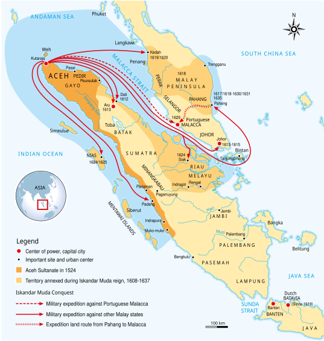
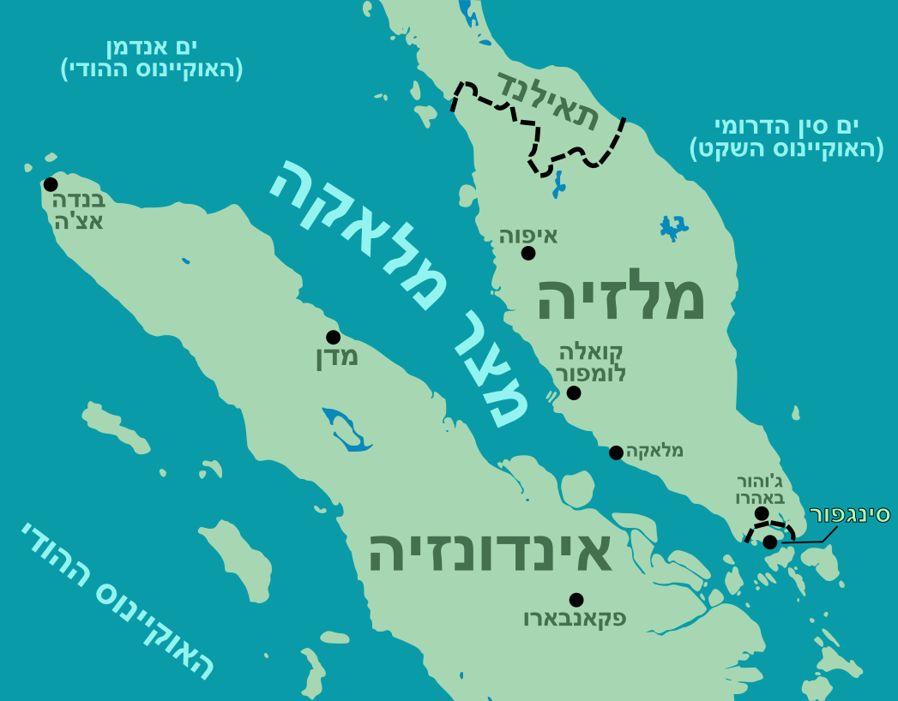
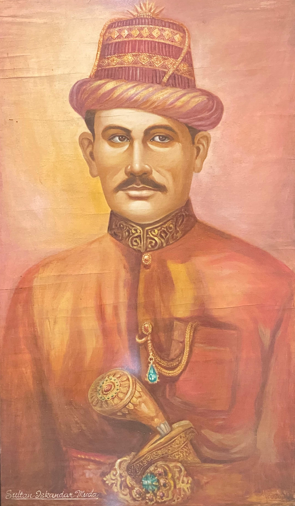
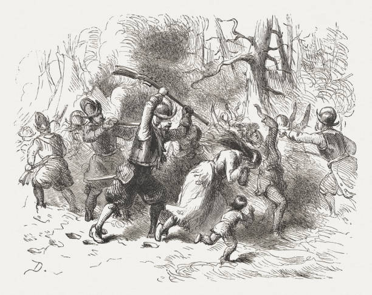
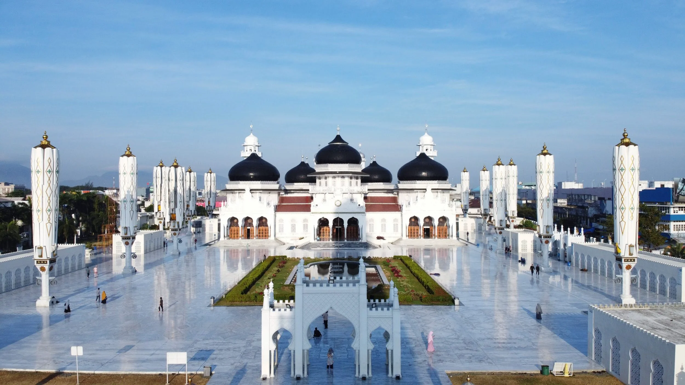
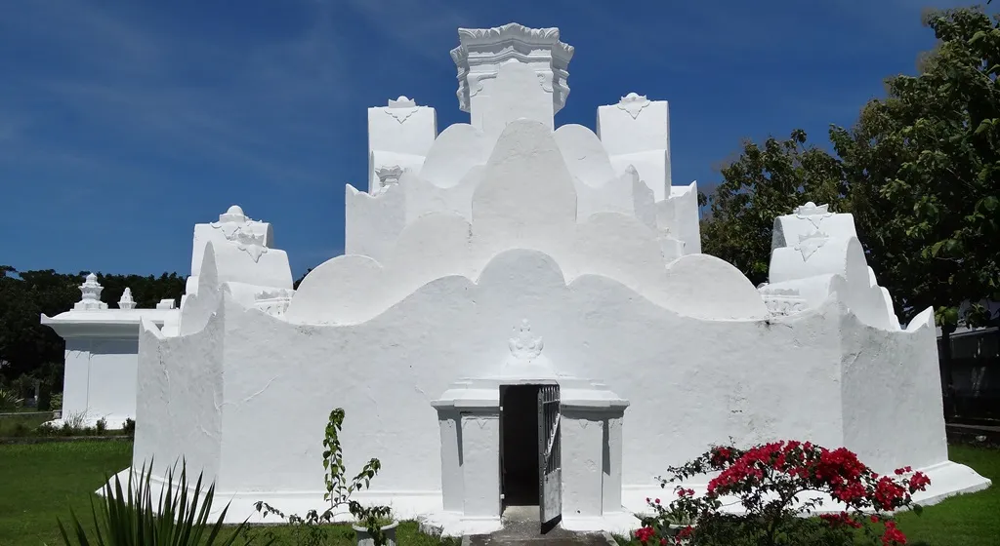

Presentasi Sejarah
Kejayaan, Kekuasaan, dan Warisan Peradaban Islam di Nusantara
"Aceh adalah serambi Mekah — pintu gerbang Islam di ujung barat Nusantara."
Geografi
Kesultanan Aceh terletak di ujung barat Pulau Sumatra, menguasai jalur perdagangan Selat Malaka — salah satu jalur maritim tersibuk di dunia. Posisi ini menjadikan Aceh sebagai pusat perdagangan rempah-rempah, lada, dan emas yang menghubungkan Asia Timur, Asia Selatan, dan Timur Tengah.
Wilayah kekuasaan Aceh meliputi pesisir utara Sumatra dan sebagian Semenanjung Malaya, menjadikannya kekuatan maritim yang dominan di kawasan tersebut.

Ekonomi
Selat Malaka adalah jalur perdagangan paling vital yang menghubungkan Samudra Hindia dan Laut Cina Selatan. Setiap kapal dagang dari India, Arab, Persia, dan Tiongkok harus melewati selat ini untuk mencapai kepulauan rempah-rempah di Maluku.
Aceh memanfaatkan posisi strategis ini dengan mengendalikan pelabuhan-pelabuhan utama dan memungut bea cukai dari kapal-kapal yang melintas. Perdagangan lada hitam, emas, dan sutra menjadikan Aceh salah satu kerajaan terkaya di Asia Tenggara pada abad ke-16 dan ke-17.


Tokoh Utama
Memerintah 1607–1636 · Masa Keemasan Aceh
Sultan Iskandar Muda adalah penguasa terbesar dalam sejarah Kesultanan Aceh. Di bawah kepemimpinannya, Aceh mencapai puncak kejayaan sebagai kekuatan maritim dan pusat perdagangan internasional. Ia memperluas wilayah kekuasaan hingga ke Semenanjung Malaya dan pesisir timur Sumatra.
Dikenal sebagai pemimpin yang tegas dan visioner, ia membangun armada laut yang kuat, memperkuat ekonomi melalui perdagangan lada dan emas, serta menjadikan Aceh sebagai pusat keilmuan Islam di Nusantara. Masa pemerintahannya adalah era di mana Aceh disegani oleh kekuatan Eropa seperti Portugis dan Belanda.
"Di masa Iskandar Muda, Aceh adalah mercusuar Islam dan kekuatan yang ditakuti di Selat Malaka."
Penjajahan
Pada tahun 1873, Belanda melancarkan serangan besar-besaran terhadap Aceh untuk menguasai wilayah terakhir yang belum tunduk di Nusantara. Perang Aceh menjadi konflik paling panjang dan paling mahal dalam sejarah kolonial Belanda, berlangsung hingga awal abad ke-20.
Rakyat Aceh melawan dengan gigih menggunakan taktik gerilya dan semangat jihad yang tinggi. Meski akhirnya Sultan Muhammad Daud Syah menyerah pada 1903, perlawanan sporadis terus berlanjut hingga tahun 1910-an. Perang ini menjadi simbol perlawanan terhadap kolonialisme di Indonesia.

Warisan

Masjid Raya Baiturrahman adalah simbol kejayaan Islam di Aceh. Dibangun pertama kali pada masa Sultan Iskandar Muda, masjid ini telah mengalami beberapa kali renovasi dan perluasan, terutama setelah kerusakan akibat Perang Aceh dan tsunami 2004.
Dengan kubah megah dan arsitektur yang memadukan gaya Mughal, Persia, dan Nusantara, Baiturrahman menjadi ikon spiritual dan budaya Aceh yang bertahan hingga hari ini. Masjid ini adalah saksi bisu perjalanan panjang Aceh dari kejayaan hingga perjuangan melawan penjajahan.
Warisan

Gunongan adalah taman kerajaan yang dibangun oleh Sultan Iskandar Muda sebagai hadiah untuk permaisurinya, Putri Pahang. Bangunan putih berbentuk bukit kecil ini dirancang agar sang permaisuri dapat mengenang kampung halamannya di Pahang, Malaysia.
Taman ini mencerminkan kemewahan dan kehalusan budaya istana Aceh pada masa kejayaannya. Hingga kini, Gunongan tetap berdiri sebagai monumen cinta dan simbol arsitektur Aceh klasik yang unik, memadukan unsur estetika Islam dan tradisi lokal.
Kesimpulan